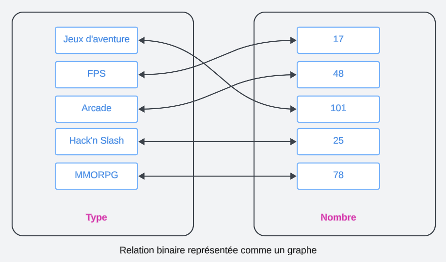
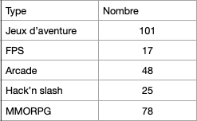
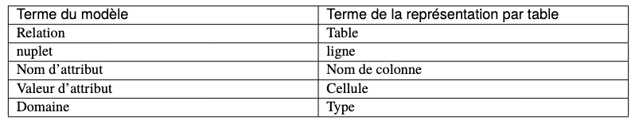

Un SGBD (Système de Gestion de Base de Données) est un logiciel qui permet de stocker, de gérer et de manipuler des données. Il existe plusieurs SGBD sur le marché, les plus connus sont:
Pour ce cours, nous allons utiliser MariaDB. MariaDB est un fork de MySQL, c'est-à-dire une version modifiée de MySQL. MariaDB est un SGBD open source, son code source est librement accessible et modifiable. MariaDB est un SGBD très performant et très fiable, il est utilisé par de nombreuses entreprises dans le monde entier (Wikipédia, Google, CentOS, Verizon,...). MySQL quant à lui est un SGBD propriétaire, son code source n'est pas librement accessible et modifiable. MySQL est un SGBD très performant et très fiable, il est utilisé par de nombreuses entreprises dans le monde entier (YouTube, GitHub, Spotify, Netflix, la NASA,...).
En début d'année nous avons installé un logiciel qui se nomme XAMPP. XAMPP est ce que l'on pourrait appeler un serveur stack (une pile de serveurs).
C'est un ensemble de logiciels qui forment l'infrastructure opérationelle sur une machine donnée. Une pile de serveurs est un ensemble de logiciels
que l'on installent sur une machine pour lui permettre de fonctionner comme un serveur.
XAMPP est une pile de serveurs qui contient les logiciels suivants:
Pour résumé, nous avons déjà installé un SGBD sur nos machines, en l'occurence MariaDB. Il ne nous reste plus qu'à lancer le serveur MariaDB (daemon) pour pouvoir commencer à travailler avec.
C’est un ensemble de résultats scientifiques, qui ont en commun de s’appuyer sur une représentation tabulaire des données. Beaucoup de ces résultats ont débouché sur des mises en œuvre pratique. Ils concernent essentiellement deux problématiques complémentaires :
Comme nous allons le voir dans ce chapitre, on ne peut pas se contenter de placer toute une base de données dans une seule table, sous peine de rencontrer rapidement des problèmes insurmontables. Une base de données relationnelle, c’est un ensemble de tables associées les unes aux autres. La conception du schéma (structures des tables, contraintes sur leur contenu, liens entre tables) doit obéir à certaines règles et satisfaire certaines propriétés. Une théorie solide, la normalisation a été développée qui permet de s’assurer que l’on a construit un schéma correct
Le langage SQL que nous connaissons maintenant est issu d’efforts intenses de recherche menés dans les années 70-80. Deux approches se sont dégagées : la principale est une conception déclarative des langages de requêtes, basées sur la logique mathématique. Avec cette approche on formule (c’est le mot) ce que l’on souhaite, et le système décide comment calculer le résultat. La seconde est de nature plus procédurale, et identifie l’ensemble minimal des opérateurs dont le système doit disposer pour évaluer une requête.
L’expression « modèle relationnel » a pour origine (surprise!) la notion de relation, un des fondements mathématiques sur lesquels s’appuie la théorie relationnelle. Dans le modèle relationnel, la seule structure acceptée pour représenter les données est la relation.
Dans le contexte des bases de données, les objets auxquels on s’intéresse sont des valeurs élémentaires comme les entiers, les réels,... . La notion de valeur élémentaire s’oppose à celle de valeur structurée : il n’est pas possible en relationnel de placer dans une cellule un graphe, une liste, un enregistrement.
Une relation est un objet abstrait, on peut la représenter de différentes manières (graphe ou table). Une représentation naturelle est le graphe comme ci-dessous :
Une autre structure possible est la table, qui s’avère beaucoup plus pratique quand la relation n’est plus binaire mais ternaire et au-delà, comme ci-dessous :
Dans une base relationnelle, on utilise toujours la représentation d’une relation sous forme de table. À partir de maintenant nous pourrons nous permettre d’utiliser les deux termes comme synonymes.
Un élément d’une relation de dimension n est un nuplet (𝑎1, 𝑎2, · · · , 𝑎𝑛). Dans la représentation par table, un nuplet est une ligne. Là encore nous
assimilerons les deux termes, toutefois nuplet indique plus précisément la structure constituée d’une liste de valeurs.
La définition d’une relation comme un ensemble (au sens mathématique) a quelques conséquences importantes :
Dans la pratique les choses sont un peu différentes pour les doublons et les cellules vides, comme nous le verrons plus tard dans le cours.
Finalement, on notera qu’aussi bien la représentation par graphe que celle par table incluent un nommage de chaque dimension (le type de jeu, leur nombre, dans notre exemple). Ce nommage n’est pas strictement indispensable (on pourrait utiliser la position par exemple), mais s’avère très pratique et sera donc utilisé systématiquement. On peut donc décrire une relation par :
Cette description est ce que l'on appel le schéma de la relation (le schéma de la table).
Et en ce qui concerne le vocabulaire, le tableau suivant montre celui, rigoureux, issu de la modélisation mathématique et celui, plus vague, correspondant à la représentation par table. Les termes de chaque ligne seront considérés comme équivalents, mais on privilégiera les premiers qui sont plus précis.
Attention à utiliser ce vocabulaire soigneusement, sous peine de confusion. Ne pas confondre par exemple le nom d’attribut (qui est commun à toute la table) et la valeur d’attribut (qui est spécifique à un nuplet). La structure utilisée pour représenter les données est donc extrêmement simple. Il faut insister sur le fait que les valeurs des attributs, celles que l’on trouve dans chaque cellule de la table, sont élémentaires : entiers, chaînes de caractères, etc.
On ne peut pas avoir une valeur d’attribut qui soit un tant soit peu construite, comme par exemple une liste, ou une sous-relation (sous-tableau). Les valeurs dans une base de données sont dites atomiques (pour signifier qu’elles sont non-décomposables, rien de toxique à priori). Cette contrainte conditionne tous les autres aspects du modèle relationnel, et notamment la conception, et l’interrogation. Une base bien formée suit des règles dites de normalisation. La forme normale minimale est définie ci-dessous.
En première approche, une relation (table) est simplement un ensemble de nuplets (lignes). On peut donc lui appliquer des opérations ensemblistes : intersection, union, produit cartésien, projection, etc. Cette vision se soucie peu de la signification de ce qui est représenté, et peut mener à des manipulations dont la finalité reste obscure. Ce n’est pas forcément le meilleur choix pour un utilisateur humain, mais ça l’est pour un système qui ne se soucie que de la description opérationnelle
Dans une seconde approche, plus « sémantique », une relation (table) est un mécanisme permettant d’énoncer des faits sur le monde réel. Chaque nuplet (ligne) correspond à un tel énoncé. Si une ligne est présent dans la table, le fait est considéré comme vrai, sinon il est faux.
Cette approche mène directement à une manipulation des données fondée sur des raisonnements s’appuyant sur les valeurs de vérité énoncées par les faits de la base. On a alors recours à la logique formelle pour exprimer ces raisonnements de manière rigoureuse. Dans cette approche, qui est à la base de SQL, interroger une base, c’est déduire un ensemble de faits qui satisfont un énoncé logique (une « formule »). Selon ce point de vue, SQL est un langage pour écrire des formules logiques, et un système relationnel est (entre autres) une machine qui effectue des démonstrations.
Comme nous l’avons vu ci-dessus, le schéma d’une table consiste – pour l’essentiel – en un nom (de table) et un ensemble de noms de colonnes. On pourrait naïvement penser qu’il suffit de créer une unique table et de tout mettre dedans pour avoir une base de données. En fait, une telle approche est inapplicable et il est indispensable de créer plusieurs tables, associées les unes aux autres. Le schéma d’une base de données est donc constitué d’un ensemble de schéma de tables. Pourquoi en arrive-t-on là et quels sont les problèmes que l’on souhaite éviter? C’est ce que nous aborderons plus tard avec la notion centrale qui est celle de la clé d’une table.
Pour échanger des informations avec votre base, vous allez donner des ordres à votre SGBD. Ces ordres, vont être donné dans un langage appelé : le langage SQL.
Nous allons apprendre ce langage dans la suite de ce cours.
SQL est l'abréviation de Structured Query Language (langage de requête structurée).
C'est un langage informatique qui vous permet d'interagir avec le SGBD et vos bases de données. Il est le plus répandu, il est donc indispensable de le connaître.
On va dès lors, s’en servir pour gérer notre base de données pour la suite du cours.